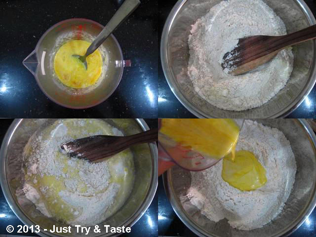
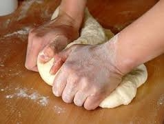
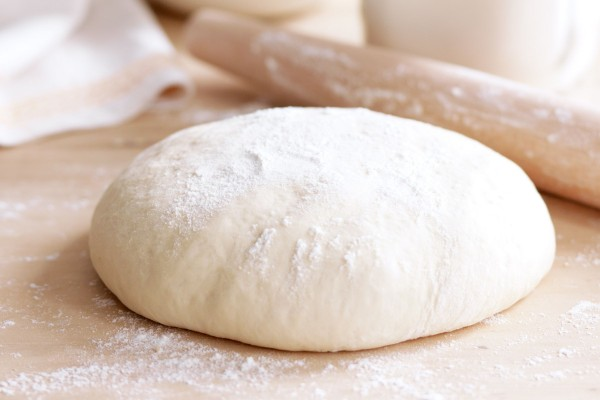

1. Campur semua bahan roti jadi satu
2. Uleni sampai kalis, jangan takut jika adonan lengket. Lumuri tangan sesekali dengan tepung (tapi jangan menambahkan tepung). Uleni terus sampai kalis.
3. Kalisnya adonan roti maryam tidak sekalis adonan roti, kira-kira seperti ini sudah cukup
